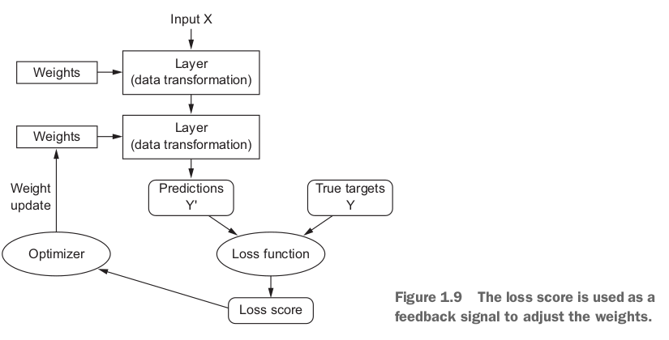

Deeplearning with python
Table of Contents
Part1 Fundamentals of deep learning
Chapter1 What is deep learning
- AI ML DL 的关系
- Learning representations from data
To define deep learning and understand the differ between dl and other ml appoaches, we need know the idea of what ml do.
- input data
- expected output
- a way to measure whether the algorithm is doing a good job
What machine learning is：searching for useful representations of some input data, within a predefined space of possibilities, using guidance from a feedback signal.
- The "deep" in deep learning
It stands for the idea of successive layers of representations, and how many layers contribute to a models of the data is called the depth of the model. [shallow learning]
This look like a magic.
- Understanding how deep learning works, in three figures
To specification of what a layer does to its input data is stored in the layer's weights, which in essence are a bunch of numbers.
In technical terms, we'd say that the transformation implemented by a layer is parameterized by its weights(Weights are also sometimes called the parameters of a layer.)
To control something, first you need to be able to observe it and measure how far this output is from what you expected. This is the job of loss function.

Chapter2 Before we begin:the math building blocks of neural networks
this chapter covers:
- example of neural network
- tensors and its op
- how neural network learn via bp and dg algorithm
- an example of MNISΤ with keras
- Data representations for neural networks
What is a tensor? a tensor is a container for data–almost numerical data.
- 0D tensor
a tensor contains only one number is called a scalar.
- 1D tensor
vectors. An 1D tensor is said to have exactly one axis.
import numpy as np x = np.array([1, 2, 3]) print x.ndimthe vector of x have 3 entries and so is called a 3-dimensional vector.(Don't confuse a 3D vector with 3D tensor. A 3D vector only has one axis, while a 3D tensor has 3 axis)
- 2D tensor
Matrices.
import numpy as np x = np.array([[1,2,3], [2, 3, 4]]) print x.ndim - 3D tensors and higher …
- Real-world example of data tensors
- 0D tensor
- The gears of nerual networks: tensor op
relu(x) ==> max(x, 0)
- Element-wise operations
x is a 2D tensor
def naive_relu(x): assert len(x.shape) == 2 # avoid overwriting the input tensor x = x.copy() for i in range(x.shape(0)): for j in range(x.shape[1]): x[i, j] = max(x[i, j], 0) return xthe addition op:
def naive_add(x, y): assert len(x.shape) == 2 assert x.shape == y.shape x = x.copy() for i in range(x.shape[0]): for j in range(x.shape[1]): x[i, j] += y[i,j] return x< BASIC LINEAR ALGEBRA SUBPROGRAMS(BLAS) ===> install it > !!!
In numpy:
import numpy as np z = x + y z = np.maximum(z, 0.) # element-wise relu - Tensor reshaping
train.reshape((6000, 28*28))TRANSPOSITION:
import numpy as np x = np.transpose(x) - [n] The engine of neural networks：gradient-based optimization
momentum algorithm==> 1. convergence speed and local minima
past_velocity = 0 momentum = 0.1 while loss > 0.01: w, loss, gradient = get_current_parameters() velocity = past_velocity * momentum + learning_rate * gradient w = w + momentum * velocity - learning_rate * gradient past_velocity = velocity update_parameter(w)< Think, understand code above —> why > !!!!
- Chaining derivatives: the Backpropagation algorithm
chain rule
Chapter3 Getting Started with neural networks
this chapter covers:
- Core components of neural networks
- An introduce to Keras
- Setting up a deep-learning workstation
- Using neural network to solve basic problems
- Anatomy of a neural network
training a neural network revolves around the following objects:
- Layers
- input data
- loss function: defines the feedback signal used for learning
- optimizer: determines how learning proceeds
Relationship between the network, layers, loss function and optimizer !!! <IMPORTANT>
- Layers: the building blocks of deep learning
a layers take one or more tensors and ouput one or more tensors. some layers are stateless, but more frequently layers have a state. the layer's weights, together contain the network's knowledge.
different layers are appropriate for different tensor formats and different data processing. For instance, vector data stored in 2D of shape (samples, features), is often processed by densely connected layers, also called fully connected.
sequence data, stored in 3D tensors of shape (samples, timesteps, features), often processed by recurrent layers such as an LSTM layer. Image data, stored in 4D tensors, usually processed by 2D convolution layers(Conv2D)
from keras import layers layer = layers.Dense(32, input_shape=(784,))a dense layer with 32 output units. We're creating a layer that will only accept as input 2D tensors where the first dimension is 784. This layer will return a tensor where the first dimensio has been transformed to be 32.
from keras import models from keras import layers model = models.Sequential() model.add(layers.Dense(32, input_shape=(784,))) # this layer not set receive input shape, it automatically do this model.add(layers.Dense(32)) - Loss function and optimizers
Once the network architecuture is defined, you have to choose two more things:
- loss function
- Optimizer
multiple outputs may have multiple loss function.
<guideline> —read again !!!! How to choose: (why)
- binary crossentropy for two-class classification
- categorical crossentropy for a many-class classification
- mean squared error for a regression problem
- connectionist temporal classification(CTC) for a sequence-learning problem.
- Introduction to Keras
Keras has the following key features:
- the same code to run seamlessly on CPU or GPU
- user-friendly api
- It supports arbitrary network architecutures.
from keras import models from keras import layers model = models.Sequential() model.add(layers.Dense(32, activation='relu', input_shape=(784, ))) model.add(layers.Dense(10, activation='softmax'))and here's the same model defined using the functional api:
input_tensor = layers.Input(shape=(784,)) x = layers.Dense(32, activation='relu')(input_tensor) output_tensor = layers.Dense(10, activation='softmax')(x) model = models.Model(inputs=input_tensor, outputs=output_tensor)specify the optimizer and loss function that the model should use, as well as the metrics you want to monitor during training.
from keras import optimizers model.compile(optimizer=optimizers.RMSprop(lr=0.001), loss='mse', metrics=['accuracy']) model.fit(input_tensor, target_tensor, batch_size=128, epochs=10) - Setting up a deep-learning workstation
better use GPU
- Classification movie reviews: a binary classification example
from keras.datasets import imdb (train_data, train_labels), (test_data, test_labels) = imdb.load_data(num_words=10000)decode one of these reviews back to English words:
word_index = imdb.get_word_index() reverse_word_index = dict([(value, key) for (key, value) in word_index.items()]) decoded_review = ' '.join([reverse_word_index.get(i-3, '?') for i in train_data[0]])- Preparing the data
you can't feed lists of integers into a nerual network, you have to turn your lists into tensors. There two ways to do this.
- pad your lists so that they all have the same length, turn them into integer tensor of shape (samples, wordindices) and then use the first layer handing such integer tensors(the embedding layer)
- One-hot encode yours lists to turn them into vectors of 0s and 1s. For example, turning the [3, 5] into 10000-dim vector that would be all 0s except for indices 3 and 5. And then we can use Dense layer.
import numpy as np def vectorize_sequence(sequences, dimension=10000): results = np.zeros((len(sequences), dimension)) for i, sequence in enumerate(sequences): results[i, sequence] = 1 return results x_train = vectorize_sequence(train_data) x_test = vectorize_sequence(test_data)Also vectorize labels:
y_train = np.asarray(train_labels).astype('float32') y_test = np.asarray(test_labels).astype('float32') - Building your network
a type of network that performs well on such a problem is a simple stack of fully connected(Dense) layers with relu activations:
Dense(16, activation='relu')!!!!—> the argument being passed to each Dense layers 16 is the number of hidden units of the layer.
relu activation implements the following chain of tensor operations:
output = relu(dot(W, input) + b)[having 16 hidden units means the weight matrix W will have shape (inputdimension, 16)]
Three are two key architecuture decisions to be made about such a stack of Dense layers:
- How many layers to use
- How many hidden units to choose for each layer ===> see chapter 4 for more detail
the model definition:
from keras import models from keras import layers model = models.Sequential() model.add(layers.Dense(16, activation='relu', input_shape=(10000,))) model.add(layers.Dense(16, activation='relu')) model.add(layers.Dense(1, activation='sigmoid'))What are activation functions, and why are they necessary?
model
- Preparing the data